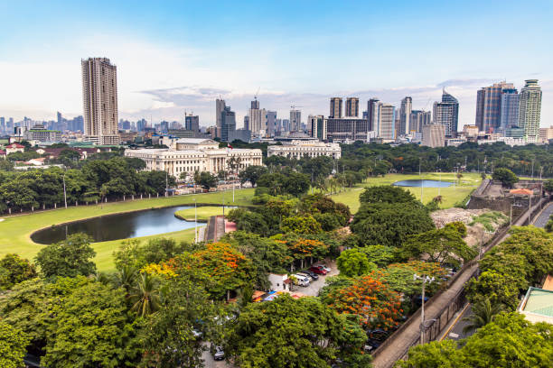

Intramuros
Intramuros, Manila’s walled city, stands as a poignant reminder of the Philippines’ rich and tumultuous history. This historic district, once the heart of Spanish colonial power in Southeast Asia, whispers tales of empires, revolutions, and the enduring spirit of the Filipino people. A walk through its cobblestone streets is a journey back in time, a captivating blend of architectural grandeur, cultural heritage, and a resilience that has weathered centuries of change.
The walls of Intramuros, erected in the 16th century, were more than just fortifications; they were a symbol of Spanish dominance and a testament to their ambition to establish a lasting presence in the region. Within these walls, a thriving city emerged, a microcosm of Spanish colonial life. Grand churches like San Agustin Church, with its intricate Baroque façade, and Fort Santiago, with its imposing ramparts and storied past, stand as reminders of this era. However, Intramuros is not just a museum of the past. It is a living testament to the enduring spirit of the Filipino people. Despite the ravages of war and time, the city has been painstakingly restored, its historic buildings reborn as museums, art galleries, and cultural centers.
The streets of Intramuros are a tapestry woven with threads of history, culture, and resilience. The echoes of Spanish rule mingle with the laughter of children playing in the plazas, the aroma of traditional Filipino cuisine wafts through the air, and the stories of heroes and revolutionaries whisper through the cobblestones. The city’s past is not a burden but a source of inspiration, a reminder of the strength and resilience of the Filipino people. Intramuros is a place where history comes alive, where the past and present intertwine, and where the spirit of the Filipino people shines through. It is a destination that invites reflection, a reminder of the enduring power of culture and the resilience of the human spirit.